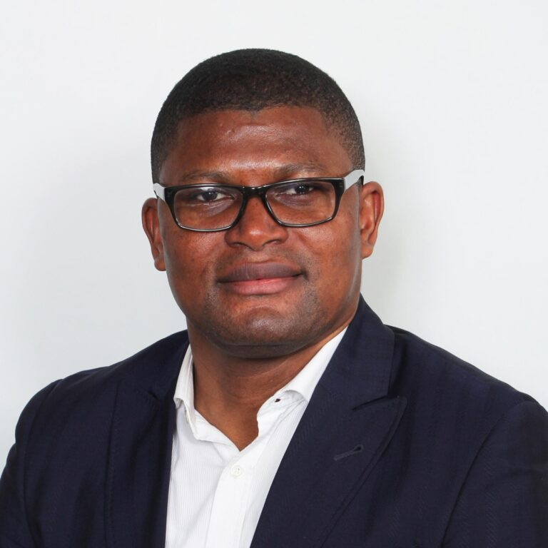

Titres de séjour & régularisation
Demandes et renouvellements de titres, régularisation, visas, cartes de résident.
Avocat au Barreau de Paris
Docteur en droit et avocat au Barreau de Paris, je défends celles et ceux dont l'avenir se joue face à l'administration ou devant le juge — droit des étrangers, asile, défense pénale et famille.

Le cabinet
Défendre ceux dont l'avenir se joue face à l'administration, avec la rigueur d'un universitaire.
Docteur en droit de l'Université Paul Cézanne (Aix-Marseille), thèse soutenue en 2010, Maître Wilfrid Balatana a obtenu le CAPA en 2012 et prêté serment le 20 février 2013. Son cabinet est installé au 11 boulevard de Sébastopol, à deux pas du Châtelet, au cœur de Paris.
Il intervient en droit des étrangers et de la nationalité, droit d'asile, droit pénal, droit de la famille et droit international — des matières où se nouent les parcours de vie, et où chaque dossier exige précision et engagement. Les clients sont reçus en français et en anglais.
Domaines d'intervention
Une pratique dédiée aux personnes, de la demande de titre de séjour à la défense devant les juridictions pénales et familiales.
Demandes et renouvellements de titres, régularisation, visas, cartes de résident.
Recours contre les OQTF et mesures d'éloignement devant les juridictions administratives.
Accompagnement devant l'OFPRA, recours devant la CNDA, procédures Dublin.
Naturalisation, déclarations de nationalité, contentieux de la nationalité française.
Assistance en garde à vue, défense devant les juridictions pénales.
Divorce, autorité parentale et contentieux familiaux à dimension internationale.
Parcours
Exercice au 11 boulevard de Sébastopol, au service des particuliers dans leurs démarches face à l'administration et leur défense devant les juridictions.
Entrée dans la profession après l'obtention du certificat d'aptitude à la profession d'avocat.
Soutenance d'une thèse de doctorat, couronnement d'un parcours universitaire de haut niveau.
Parcours académique
Thèse soutenue le 25 juin 2010 à l'Université Paul Cézanne (Aix-Marseille 3).
Obtenu en 2012, suivi de la prestation de serment le 20 février 2013.
Dossiers traités en français et en anglais, contentieux à dimension internationale.
Informations pratiques
Le cabinet est situé au 11 boulevard de Sébastopol, dans le 1ᵉʳ arrondissement, à proximité immédiate de la station Châtelet.
Toque C2465 au palais de justice de Paris — correspondances et actes déposés au palais.
Les consultations se tiennent en français ou en anglais, au cabinet ou à distance.
Contact
11 boulevard de Sébastopol
75001 Paris
Toque C2465
Palais de justice de ParisVia le formulaire ci-contre
Échanges couverts par le secret professionnel